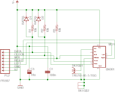
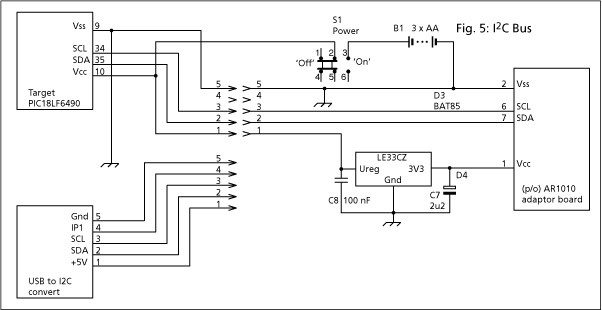
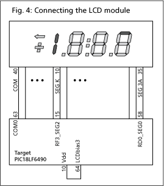
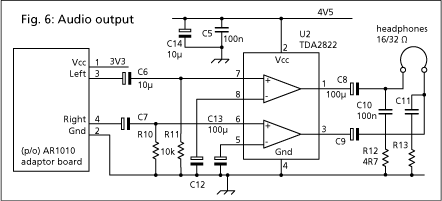
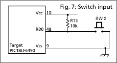
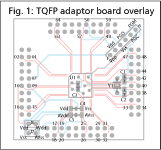
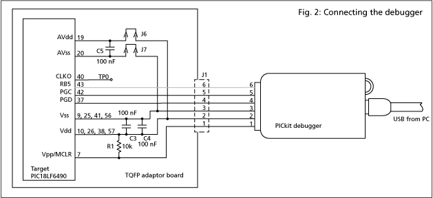
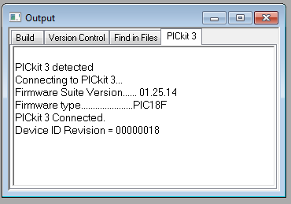

FM Tx/Rx
- * Design brief
- * Reference design
- * Circuits
- * Facilities
- * Construction
- * Pushbutton connections
- * LCD connections
- * Parts list
- * Register map
- * Firmware
- * Development with MPLABX
- * Development with MPLAB
- * Troubleshooting
- * Links to resources
[↑ Projects index]
Design brief
Objective: To produce an FM radio receiver which should be -
-
Tuneable approximately over the UK broadcast band
(87.5 - 108 MHz).
-
Able to give stereo (L & R
channels) audio outputs.
-
Capable of driving a normal set of 35 ohm impedance headphones.
-
Powered by a (reasonably sized) battery.
-
Portable (including an antenna).
-
Constructed using components and facilities that are either in the
labs or are readily obtainable at reasonable expense.
[↑ Top]
Reference design
For about ten years after the introduction of the transistor into
domestic radio receivers in the late 1950s, the circuit design of such
radios followed that of the preceding era when thermionic valves were
used in a standard pattern of
A student might reasonably meet the specification with such a design.
However, the required variable capacitors and 'IF transformers' are now
expensive and hard to obtain.
The first use of integrated circuits was to implement the same superheterodyne
method. The old discriminator, however, was replaced by a phase lock loop. Tuning
was achieved by a variable capacitance diode. A student trying to
pursue a design using these ICs will discover that they are largely
obsolete.
The next step in the evolution of the FM receiver was to implement
the local oscillator using a digitally programmable frequency synthesizer.
This mandated digital control of tuning and then also other functions
such as volume control
Today, portability in radio receivers has become a primary requirement.
They tend to be integrated within mobile phones and MP3 players as
'add-on' features. The Airoha chip exemplifies this philosophy, having
very low battery drain (10 mA) and a very small package (4 mm square).
To assist groups having no clear idea how the objectives are to be
achieved there exists a suggested reference design. This is
-
Based on the AR1010 receiver IC from Airoa.
-
Controlled by a
PIC microcontroller: PIC18LF6490. The LF version of this
controller will function with supplies as low as 2.0 volts.
-
Designed to allow the PIC and the AR1010 to communicate using the
I2C interface -
-
Able to accept user input from pushbuton switches.
-
Able to show frequency on a
Varitronix LCD display
-
Boosted to headphone power levels by a TDA2822.
Circuits
Fig. 8: AR1010 adaptor board

The AR1010 uses a 24-lead QFN package. Until it becomes possible within
FEPS to mount QFN packages on a PCB, a commercially made 'breakout
board' with an AR1010 ready soldered is chosen. This has,
unfortunately, a connection spacing of 2 mm that is inconvenient when
2.54 mm pitch prototype matrix board is used. To circumvent this
problem, an adaptor board has been designed to convert the spacing. In
addition a few components have been added to assist with integration
into the rest of the radio.
A problem with the overall receiver design is that the LCD prefers a
high drive voltage (e.g. 5V) to achieve best contrast. The AR1010, on
the other hand, is happiest with with 3.3 volts. Although the data
sheet mentions an absolute maximum Vdd of 5.5 volts, the bus interface
is specified no higher than 3.6 volts. If the AR1010 is powered at 5
volts it will get hot, and may die. A 3.3 volt regulator is
highly recommended. The LE33CZ regulator IC is
suitable, as is the discrete circuit shown in Fig. 3.

Figure 5 shows one arrangement of the I2C interconnections betwen
the three main functional blocks. Using a five way connector the AR1010
can be commanded either from the USB to I2C converter or
from the PIC, depending on which set of header pins is chosen.
D3 and D4 prevent the 4.5 volt I2C signals from the PIC driving the
AR1010 above its limit. Unfortunately, the PIC then sees signals
only 73% of its Vdd. This should still be a valid logic '1'.
 The particular
microcontroller chosen for the reference design, the PIC18LF6490,
includes hardware support for liquid crystal displays. In fact, it can
drive LCDs that are more sophisticated ('multiplexed') than the 3.5
digit x 7-segment Varitronix display.
About all you need for a working display is to connect the 'backplane'
electrode to the COM0 drive from the PIC, and then connect the separate
segment electrodes to a sub-set of the 32 SEGnn drives. On the
prototype, the assigment of display segments to drive lines from the PIC
proved awkward in software. It would be more convenient to map all
seven segments plus the DP from one digit to one 8-bit register in the
PIC, and to maintain the same mapping for the other digits also.
Connect the LCDbias3 pin to Vdd.
 The audio amplifier /
headphone driver stage is trivial. The only point to note is that the
outputs from the AR1010 have DC bias which must be removed with coupling
capacitors. The internal volume adjustment in the AR1010 has been found
to be capable of adequate performance, and may be used in place of a
dual potentiometer.
 Pushbutton switch input
is quite trivial. It would be possible to save a couple of I/O pins by
using a 3 x 3 switch matrix, but that's really more trouble than it's worth.
Some of the ports may be configured to operate pull-up resistors internal
to the PIC, but this was not attempted on the prototype.
[↑ Top]
Facilities
To assist development of the project, groups have access to -
-
A PC with C language development tools: Microsoft Visual C++,
and the MPLAB embedded
microcontroller development tools with C18 compiler.
-
A
USB to I2C converter.
-
A Pickit3.
This useful device connects to a PC, via the USB interface, and
then to the target microcontroller via a six-pin inline header
connector. It functions both as a programmer, capable of
transfering code generated by the PC to the microcontroller, and
also as a debugger which can initiate, control and monitor the
execution of that code as it runs on the target.
-
A PIC18LF6490 microcontroller soldered to an adaptor board
with 0.1 inch pitch pads making manual connection very
easy.
-
A demo board for PIC18F4XK20, driveable from the Pickit3.
-
An FM signal generator and an 'off air' signal feed.
-
The Technical Services Unit PCB fabrication service.
-
A plastic enclosure with TSU EPS chassis rails
to keep everything tied together.
-
A selection of frequently required tools and components; e.g.
crimp pliers, resistors, transistors, sockets etc.
[↑ Top]
Construction
Fig. 1: Component overlay for adaptor PC board

It is not expected that the circuit be 'fully
engineered'. Instead, 'prototype' construction methods are acceptable.
The PIC18LF6490 is available surface mounted on an adaptor for 0.1 inch
pitch pin spacing. The adaptor board may be 'old style' (produced
in-house) or bought in. Tracks on the latter will be similar to those
shown at Fig. 1. This version has provision for a connection directly
to the PICkit 3 debugger.

Pin 6 of the debugger is not used. By default, however, it may be
connected to port RB5 onthe PIC. Break the track if you wish to make
use of RB5.
The AR1010 comes ready surface-mounted on a 'breakout board'. Bizarrely,
this uses 2 millimetre pitch pads. Groups choosing to mount this onto
0.1 inch pitch stripboard or 'breadboard' can still do so via
short lengths of tinned copper wire. Groups in years past tended to
perch the AR1010 three inches up in the air. The electrical performance
of that arrangement was as wobbly as its mechanical.
The ' Electronics
Prototype System' may be used if groups wish to 'package' the
circuit with its I/O sub-assemblies.
Groups may make use of the 'enamel wiring pen' method as a
speedier or more flexible alternative to PCB production.
[↑ Top]
Pushbutton Connections
The pushbutons are used in a conventional arrangement whereby PIC inputs
are pulled up to Vcc via a 10k resistor and pulled down to Vss via a
button whilst it is pushed. Debounce is done in the firmware.
Connections from PIC to Pushbutton switches
PIC
name |
PIC
pin |
Pull-up
pin |
IDC
pin |
Button |
| RB0 | 48 | 2 | 10 | Chan+ |
| RB5 | 43 | 3 | 7 | Chan- |
| RA0 | 24 | 4 | 12 | PreSet+ |
| RA1 | 23 | 5 | 5 | PreSet- |
| RG0 | 3 | 6 | 14 | Vol+ |
| RG1 | 4 | 7 | 3 | Vol- |
| RG2 | 5 | 8 | 16 | SegTest |
| RG3 | 6 | 9 | 2 | Error |
| Vss | 9 | - | 1, 4, 6, 8,
9, 11, 13, 15 | Switch
return |
[↑ Top]
LCD Connections
Note on LCD function: The PIC is capable of driving more sophisticated
displays with more segments than the simple 'seven-segment' variety
available in the lab. For the latter type you should wire the PIC
for a 'static' biasing arrangement.
The table below shows the originally chosen mapping between the PIC's
segment driver pins and the LCD. This proved awkward to implement in
firmware. You should consider a simpler scheme.
Connections from PIC to LCD
| PIC name | PIC
pin |
IDC
pin |
LCD
pin |
Varitronix
name |
| RD0_SEG0 | 58 | 35 | 21 | 3A |
| RD1_SEG1 | 55 | 37 | 20 | 3B |
| RD2_SEG2 | 54 | 39 | 19 | 3C |
| RD3_SEG3 | 53 | 40 | 18 | 3D |
| RD4_SEG4 | 52 | 38 | 17 | 3E |
| RD5_SEG5 | 51 | 33 | 22 | 3F |
| RD6_SEG6 | 50 | 31 | 23 | 3G |
| RD7_SEG7 | 49 | 27 | 25 | 2A |
| RB1_SEG8 | 47 | 29 | 24 | 2B |
| RB2_SEG9 | 46 | 34 | 15 | 2C |
| RB3_SEG10 | 45 | 32 | 14 | 2D |
| RB4_SEG11 | 44 | 30 | 13 | 2E |
| RC5_SEG12 | 36 | 25 | 26 | 2F |
| RC2_SEG13 | 33 | 18 | 27 | 2G |
| RA4_SEG14 | 28 | 17 | 30 | 1A |
| RA5_SEG15 | 27 | 19 | 29 | 1B |
| RA2_SEG16 | 22 | 26 | 11 | 1C |
| RA3_SEG17 | 21 | 24 | 10 | 1D |
| RF0_SEG18 | 18 | 22 | 09 | 1E |
| RF1_SEG19 | 17 | 15 | 31 | 1F |
| RF2_SEG20 | 16 | 13 | 32 | 1G |
| RF3_SEG21 | 15 | 10 | 03 | K |
| RF4_SEG22 | 14 | 36 | 16 | DP3 |
| RF4_SEG23 | 13 | 01 | 38 | Z |
| COM0 | 63 | 28 | 12 | DP2 |
| COM0 | 63 | 21 | 08 | DP1 |
| COM0 | 63 | 20 | 28 | COL |
| COM0 | 63 | 02 | 39 | X |
| COM0 | 63 | 08 | 02 | Y |
| COM0 | 63 | 06 | 01 | COM |
| COM0 | 63 | 04 | 40 | COM |
[↑ Top]
Parts list
| Qty | Cost | Part desc | Distrib | Dst. No. |
| 1 | 23.88 | Pickit3 Debugger |
Ocall |
1771323 |
| 1 | 16.56 | USB-I2C module |
Robot Electronics |
USB to I2C Interface |
| 1 | 3.48 | Microcontroller, PIC18LF6490 | Ocall | 1579638 |
| 1 | 5.98 | FM Receiver Module |
SparkFun
| WRL-08770 |
| 1 | 0.47 | Headphones | Ocall | AV18777 |
| 1 | 0.89 | Audio amp |
RS Comp | 177-5216 |
| 1 | 3.21 | LCD display | Ocall | 1183144 |
| 1 | 7.99 | Box |
Maplin | BZ77J |
| 1 | 3.00 | Chassis |
Smiths Metal | - |
| 1 | 3.64 | Matrix board | Maplin | JU37S |
| 1 | 1.27 | USB lead |
Rapid | 19-8660 |
| 1 | 4.36 | Wrap wire | RS | 209-4827 |
| 1 | 0.05 | Antistatic bag | Rapid | 87-1426 |
| 1 | 4.00 | Telescopic antenna | Maplin | L28AF |
| 8 | 0.02 | Washer, M3 | Rapid | 33-4320 |
| 1 | 20.87 | VHF distribution amplifier |
Ocall | 4255811 |
[↑ Top]
Register map
| Address | Alias |
D15 | D14 | D13 | D12 |
D11 | D10 | D9 | D8 |
D7 | D6 | D5 | D4 |
D3 | D2 | D1 | D0 |
| 00H | R0 |
| x0_en | | ENABLE |
| 01H | R1 |
| rds_en | |
rds_int_en | stc_int_en | deemp | mono |
smute | hmute | |
| 02H | R2 |
| TUNE | CHAN<8:0> |
| 03H | R3 |
SEEKUP | SEEK | SPACE | BAND<1:0> |
VOLUME<3:0> | SEEKTH<6:0> |
| 04H | R4 |
|
| 05H | R5 |
|
| 06H | R6 |
|
| 07H | R7 |
|
| 08H | R8 |
|
| 09H | R9 |
|
| 0AH | R10 |
| seek_wrap | |
| 0BH | R11 |
hilo_side | | hiloctrl_b1 |
| hiloctrl_b2 |
| 0CH | R12 |
|
| 0DH | R13 |
| GPIO3<1:0> |
GPIO2<1:0> | GPIO1<1:0> |
| 0EH | R14 |
VOLUME2<3:0> | |
| 0FH | R15 |
| rds_sta_en |
rds_mecc<1:0> | |
rds_ctrl |
| 10H | R16 |
|
| 11H | R17 |
|
| 12H | RSSI |
RSSI<6:0> | IF_CNT<8:0> |
| 13H | STATUS |
READCHAN<8:0> |
RDSR | STC | SF | ST |
|
| 14H | RBS |
RBS1<1:0> | RBS2<1:0> |
RBS3<1:0> | RBS1<4:0> |
|
| 15H | RDS1 |
RDS1<15:0> |
| 16H | RDS2 |
RDS2<15:0> |
| 17H | RDS3 |
RDS3<15:0> |
| 18H | RDS4 |
RDS4<15:0> |
| 19H | RDS5 |
rds_dsc<15:0> |
| 1AH | RDS6 |
rds_dfc<15:0> |
| 1BH | DEVID |
VERSION<3:0> |
MFID<3:0> |
| 1CH | CHIPID |
CHIPNO<15:0> |
[↑ Top]
Firmware
Firmware for the PIC18F6490 may be derived from the Visual C software
supplied to run as a console mode application under Windows.
The crucial section which initialises the AR1010 register set
can be left largely intact.
However, some modifications must be made to the code:
Partly complete firmware is available here for MPLAB (updated
20100310), or here for MPLABX (updated
20140128) This requires routines to be added for reading the pushbuttons
and writing to the LCD. It does not, at present, attempt to save power
by putting the PIC to 'sleep' mode. There is no 'autorepeat' on button
pushes. There is no station autotune. There is no readout of volume
level.
[↑ Top]
Development with MPLABX IDE
For 2013, the IDE is being switched from MPLAB to the newer MPLABX on
all labs machines. If you must use the previous MPLAB then please see
below.
MPLABX and the XC8 C-compiler should be installed by lab staff prior to
the project time. Unless you have previous experience of development
under MPLABX then you may wish to build at least one of the sample
programs for the PIC18F45K20 demo board supplied by Microchip. Known
good hardware and firmware gives your first code its best chance of
running straight away. The original MPLAB C source code needs minor
changes to allow it to run under MPLABX :
- Processor selection
-
Do not explicitly include a header file for the processor used, eg -
#include "p18f45k20.h"
The exact processor type is now set as an option in the compiler
environment (File: Project Properties: Categories: Conf: Device:
PIC18F45K20).
- Compiler selection
-
Include a header file for the compiler used, viz -
#include <xc.h>
Or do this in an included header -
#ifndef PWM_H
#define PWM_H
#include <xc.h>
#endif
- Program sections
-
Do not include block instructions to identify the psect -
#pragma code
#pragma romdata Lesson3_Table = 0x180
Neither should the psect be set by storage modifiers:
const rom unsigned char LED_LookupTable[8] =
{0x01, 0x02, 0x04, 0x08, 0x10, 0x20, 0x40, 0x80};
The XC8 compiler is able to assign an appropriate psect
automatically.
MPLABX project files are given for the updated versions of the C source
code examples. See directory XC8Lessons. You should try building at
least one project using File: New Project
...
Follow the sequence of dialogs presented to specify
Standalone Project, Advanced 8-bit
MCUs, Device: PIC18F45K20, Compiler: XC8. Give your project a name and
location on E:.
Once you have a new, empty project appearing under the Projects tab, find its Source
Files section and add to that your *.c
source(s). You should not need to explicitly specify the locations of
*.h headers
#included by your code. MPLABX should find them on its own.
Go to File: Project Properties and select
Option Categories: Power. Check the box to
Power target circuit from PICKit3 at 3.25 volts.
Note: you are limited to a supply draw of 30 mA or less when using the
PICKit3 to power your target board.
Connect the demo board to the PICKit3 either directly, or (preferably)
using the 6-way lead, taking care to align pin 1 at each end. You can
then try to Run: Run Main Project. If the
project build succeeds then, in the Output
window you should now see the message Device ID
Revision = 00000018 or similar. This is confirmation that
communication with the PIC has been established. It is unlikely that a
Run will succeed without that response.
It is advisable to turn the debugger power off before (dis)connecting
the target board or the debugger.
[↑ Top]
Development with MPLAB IDE
MPLAB has been superseeded as the current Microchip IDE by MPLABX (see
above).
If you have a ready made 'project file', e.g.
pic2fm.mcp, then you may be able to use that with the particular
version of MPLAB and directory structure of the PC you are now using. If
not, then it is best to create a project from scratch, for which some
configuration is required before successful code can be executed.
It's probably best to start with the PICKit3 disconnected. Start MPLAB
using the desktop icon . Then choose menu Project : Project
Wizard. Select PIC18F6490 from the
drop-down list.
the Active Toolsuite should be set to the
mplabc18 toolsuite, Microchip C18 Toolsuite in
the drop-down. It will reference a file such as
C:\Program Files\Microchip\mplabc18\v3.40\mpasm\mpasmwin.exe
or similar. If any component of mplabc18 cannot be found then it will
be marked with a .
Fix each one by browsing to the corresponding file in the mplabc18
directory.
name your new
project file in a suitable directory (perhaps somewhere within MyDocuments\...) where you have already placed
a main.c source file (together with other
source or header files only) which you  to the project. You do not need to have a
processor-specific header file (e.g.
PIC18F6490.h) in your project directory; it will be obtained from
the built-in library once the path for that is set up. Header files in
the project directory should not need to be added explicitly. you now with the Wizard.
to the project. You do not need to have a
processor-specific header file (e.g.
PIC18F6490.h) in your project directory; it will be obtained from
the built-in library once the path for that is set up. Header files in
the project directory should not need to be added explicitly. you now with the Wizard.
If you cannot at this stage see separate windows titled Project and Output then
Choose menu View : Project and Output
Choose menu Debugger : Select Tool : PICKit3
If the large button in the toolbar shows
then change that to  .
.
Choose menu Debugger : Settings ... and select
the tab. Adjust
the slider to 3.25 volts and check the box.
Note:
you are limited to a supply draw of 30 mA or less when using the PICKit3
to power your target board.
Choose menu Project : Build Options : Project
Then hit the tab for Directories, and select
Assemble/Compile/Link in the Project
Directory. In the Show Directories for:
drop down pick Include Search Path. Browse
to
C:\Program Files\Microchip\mplabc18\v3.40\h.
Pick Library Search Path and browse to C:\Program Files\Microchip\mplabc18\v3.40\lib.
Now you can menu Project : Save
Project, and then in the project directory you should see files
pic2fm.mcp,
pic2fm.mcw and
pic2fm.mcs.
You should now be able to Project : Build All.
After a successful compile and link
you should see
main.o,
pic2fm.cof,
pic2fm.hex and
pic2fm.map.
files in your project directory.
Connect your target board to the debugger using the six-way cable,
taking care to align the connector correctly. Now connect the debugger
onto the USB bus. In the Output window you
should see a message appear PICKit3 Connected
- 
If, in the toolbar, the Power button is still 'grayed' then hit it
whereupon it should turn green:
In the Output window you should now see the
Device ID Revision = 00000018 or similar.
This message is confirmation that you have succeeded in establishing
communication with the PIC. Hit the Program button to transfer code into your
microcontroller chip. Then click the Run button to begin code execution or debug.
It is advisable to turn the debugger power off before disconnecting the
target board or the debugger.
[↑ Top]
Troubleshooting
These tips apply to the reference design. Customised designs may need
different procedures. Don't assume that anything is correct; measure
it, preferably using an oscilloscope with a high impedance probe.
-
It shouldn't need saying but - check the power supply. Measure
this at the header pins on the adapter board. Even if AVdd or
AVss are not used they must also be connected to Vdd and Vss.
respectively.
-
Check the PIC internal clock oscillator. This should be
2.0 MHz measured at OSCO (pin 40).
[↑ Top]
Links
-
* Programming guide for the AR1000. Needs
installed Flash player.
-
* Data sheet for the AR1000. Also example code.
-
* Microchip Technology Inc
-
* YouTube video introduction.
[↑ Top]
E-mail:R.Clarke@surrey.ac.uk
Last modified: 2014 February 13th.